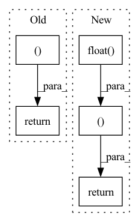

Pattern ID :1172

Before Change
@override(ModelV2)
def forward(self, input_dict, state, seq_lens):
model_out, _ = self.model(input_dict, state, seq_lens)
return model_out, []
After Change
@override(ModelV2)
def forward(self, input_dict, state, seq_lens):
return input_dict["obs_flat"].float(), state
In pattern: SUPERPATTERN
Frequency: 5
Non-data size: 5
Instances
Fragment ID: 3593150
Project Name: replicable-marl/marllib
Commit Name: d339c3de863e3cae6fbfe67e503ff0953e2cd868
Time: 2022-03-03
Author: hhhusiyi@163.com
File Name: MPE/model/torch_maddpg.py
M Class Name: MADDPGTorchModel
N Class Name: MADDPGTorchModel
M Method Name: forward(4)
N Method Name: forward(4)
M Parent Class: nn.Module,TorchModelV2
N Parent Class: nn.Module,TorchModelV2
M File Name: MPE/model/torch_maddpg.py
N File Name: MPE/model/torch_maddpg.py
M Start Line: 237
M End Line: 238
N Start Line: 234
N End Line: 234
'>
Before Change
p = tar_candit_pro * d_x_dist.log_prob(d_x) * d_y_dist.log_prob(d_y)
_, indices = p.topk(self.M, dim=1)
return tar_candit_pro, d_x, d_y, indices
// todo: offset_gt for every tar_candidate
def loss(self,
feat_in: torch.Tensor,
After Change
_, N, _ = tar_candidate.size()
// stack the target candidates to the end of input feature
feat_in_repeat = torch.cat([feat_in.repeat(1, N, 1), tar_candidate.float()], dim=2)
// feat_in_repeat = torch.cat([feat_in.repeat(1, N, 1), tar_candidate.float()], dim=2)
// print("feat_in_repeat size: ", feat_in_repeat.size())
// compute probability for each candidate
tar_candit_prob = self.prob_mlp(feat_in_repeat).squeeze(-1) // [batch_size, self.N_tar, 1]
tar_offset_mean = self.mean_mlp(feat_in_repeat) // [batch_size, self.N_tar, 2]
// print("tar_candit_pro size: ", tar_candit_prob.size())
// print("tar_offset_mean size: ", tar_offset_mean.size())
// compute the prob. of normal distribution
d_x_dist = Normal(tar_offset_mean[:, :, 0], torch.tensor([1.0], device=self.device)) // [batch_size, self.N_tar]
d_y_dist = Normal(tar_offset_mean[:, :, 1], torch.tensor([1.0], device=self.device)) // [batch_size, self.N_tar]
d_x = d_x_dist.sample()
d_y = d_y_dist.sample()
// p = tar_candit_pro * d_x_dist.log_prob(d_x) * d_y_dist.log_prob(d_y)
_, indices = tar_candit_prob.topk(self.M, dim=1)
return tar_candit_prob, d_x, d_y, indices
// todo: offset_gt for every tar_candidate
def loss(self,
feat_in: torch.Tensor,
'>
Fragment ID: 3593151
Project Name: henry1iu/tnt-trajectory-predition
Commit Name: 80b9bc9194db403722ff2868d67f8e92c73f17a7
Time: 2021-04-06
Author: liu.jb.henry@gmail.com
File Name: core/model/layers/target_prediction.py
M Class Name: TargetPred
N Class Name: TargetPred
M Method Name: forward(3)
N Method Name: forward(3)
M Parent Class: nn.Module
N Parent Class: nn.Module
M File Name: core/model/layers/target_prediction.py
N File Name: core/model/layers/target_prediction.py
M Start Line: 49
M End Line: 68
N Start Line: 52
N End Line: 72
'>
Before Change
avg_probs = torch.mean(encodings, dim=1)
perplexity = torch.exp(-torch.sum(avg_probs * torch.log(avg_probs + 1e-10), dim=-1))
return quantized.permute(1, 0, 3, 2).reshape(B, C, L), loss, perplexity.sum()
class ChannelNorm(nn.Module):
def __init__(self,
After Change
x_flat, self.embedding.t(),
alpha=-2.0, beta=1.0)
indices = torch.argmin(distances.float(), dim=-1)
encodings = F.one_hot(indices, M).float()
quantized = F.embedding(indices, self.embedding)
quantized = quantized.view_as(x)
if self.training:
self.ema_count = self.decay * self.ema_count + (1 - self.decay) * torch.sum(encodings, dim=0)
n = torch.sum(self.ema_count)
self.ema_count = (self.ema_count + self.epsilon) / (n + M * self.epsilon) * n
dw = torch.matmul(encodings.t(), x_flat)
self.ema_weight = self.decay * self.ema_weight + (1 - self.decay) * dw
self.embedding = self.ema_weight / self.ema_count.unsqueeze(-1)
e_latent_loss = F.mse_loss(x, quantized.detach())
loss = self.commitment_cost * e_latent_loss
quantized = x + (quantized - x).detach()
avg_probs = torch.mean(encodings, dim=0)
perplexity = torch.exp(-torch.sum(avg_probs * torch.log(avg_probs + 1e-10)))
return quantized, loss, perplexity
class CPCLoss(nn.Module):
def __init__(self, n_speakers_per_batch, n_utterances_per_speaker, n_prediction_steps, n_negatives, z_dim, c_dim):
'>
Fragment ID: 3593149
Project Name: bshall/vectorquantizedcpc
Commit Name: 535c95415d62ececde085e376f451b3b76e1b624
Time: 2020-05-01
Author: benji.l.shall@gmail.com
File Name: model.py
M Class Name: VQEmbeddingEMA
N Class Name: VQEmbeddingEMA
M Method Name: forward(2)
N Method Name: forward(2)
M Parent Class: nn.Module
N Parent Class: nn.Module
M File Name: model.py
N File Name: model.py
M Start Line: 21
M End Line: 54
N Start Line: 81
N End Line: 112
'>
Before Change
@override(ModelV2)
def forward(self, input_dict, state, seq_lens):
model_out, _ = self.model(input_dict, state, seq_lens)
return model_out, []
After Change
@override(ModelV2)
def forward(self, input_dict, state, seq_lens):
return input_dict["obs_flat"].float(), state
'>
Fragment ID: 3593147
Project Name: replicable-marl/marllib
Commit Name: d339c3de863e3cae6fbfe67e503ff0953e2cd868
Time: 2022-03-03
Author: hhhusiyi@163.com
File Name: MetaDrive/model/torch_maddpg.py
M Class Name: MADDPGTorchModel
N Class Name: MADDPGTorchModel
M Method Name: forward(4)
N Method Name: forward(4)
M Parent Class: nn.Module,TorchModelV2
N Parent Class: nn.Module,TorchModelV2
M File Name: MetaDrive/model/torch_maddpg.py
N File Name: MetaDrive/model/torch_maddpg.py
M Start Line: 241
M End Line: 242
N Start Line: 238
N End Line: 238